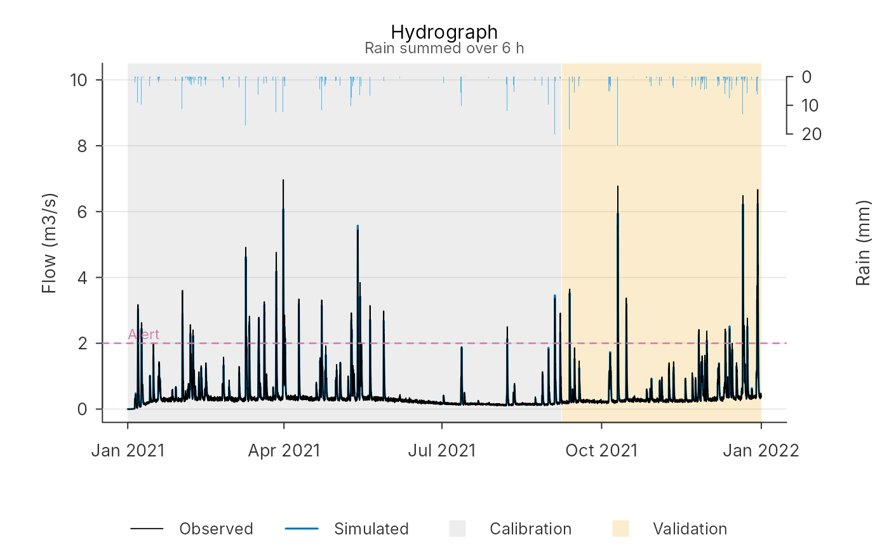
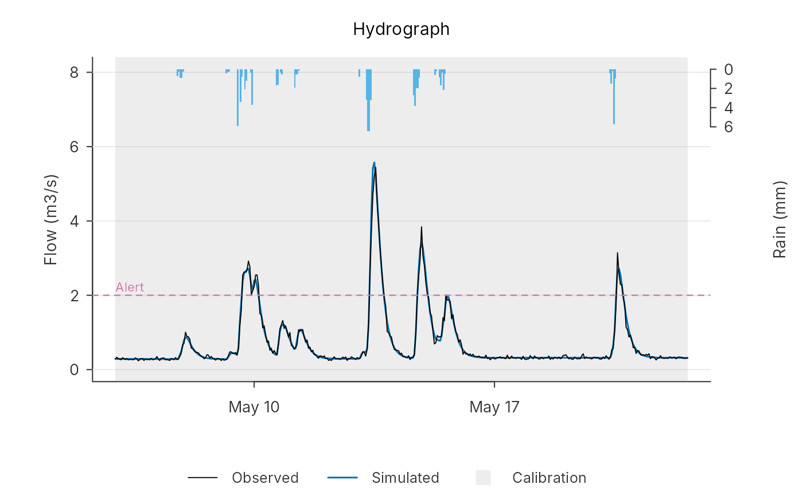
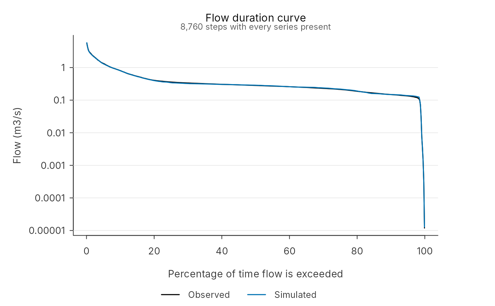
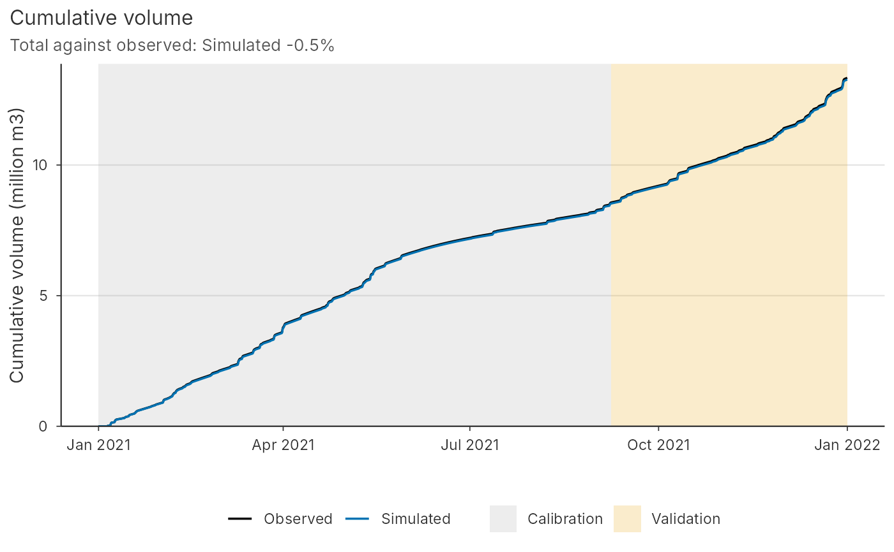

Gathers a simulation and what belongs with it (observed flow, rain, times, the calibration
and validation windows, warning thresholds and an optional second run) for the standard run
plots. plot() draws them in base R and autoplot() returns a ggplot; both draw the same
figure in the pdmS7 house style (pdm_colours()).
Usage
pdm_series(
simulated,
observed = NULL,
rain = NULL,
time = NULL,
dt = 1,
windows = NULL,
thresholds = NULL,
alternative = NULL,
labels = NULL
)
project_series(project, entry = NULL, compare = NULL)
# S3 method for class 'pdm_series'
plot(
x,
type = c("hydrograph", "duration", "volume", "residuals"),
period = NULL,
...
)
# S3 method for class 'pdm_series'
autoplot(
object,
type = c("hydrograph", "duration", "volume", "residuals"),
period = NULL,
...
)Arguments
- simulated
Simulated flow, m3/s.
- observed
Observed flow, m3/s, the same length; optional.
- rain
Rain, mm per step; optional.
- time
POSIXct times of each step (the end of the step); optional. Without times, the x axis is hours from the start.
- dt
Step length in hours.
- windows
Named list of windows to shade, such as
list(calibration = c(first, last), validation = c(first, last)), each a pair of row numbers or of times.- thresholds
Named numeric vector of threshold flows, m3/s.
- alternative
A second simulation to compare, such as the run before a change.
- labels
Named character vector of legend labels for
observed,simulatedandalternative.- project
A calibration project folder.
- entry
Model entry to draw (structure, trial, calibration or candidate); by default the latest candidate, or the latest model entry.
- compare
Optional second entry, drawn as the alternative.
- x, object
A
pdm_series.- type
Which plot:
hydrograph,duration,volumeorresiduals.- period
Rows to draw:
NULLfor all, a window name such as"validation", or a pair of row numbers or times.- ...
Not used.
Value
pdm_series() and project_series(): a pdm_series list. plot(): x,
invisibly. autoplot(): a ggplot.
Details
type | Shows |
hydrograph | flow against time; rain hangs from the top, windows shaded, thresholds dashed |
duration | flow duration curves: the share of time each flow is exceeded, on a log scale |
volume | cumulative volume, to see where the water balance drifts |
residuals | simulated minus observed flow, with its 30-day running mean |
project_series() builds the series for a model entry of a calibration project from the
registered data, so a logged run can be drawn without rerunning it by hand.
Long records are thinned for drawing only: rain is summed into at most 1,500 bars and the duration curves are drawn from 500 quantiles. Lines keep every step.
Examples
rain <- synthetic_rain("2021-01-01", years = 1, dt = 1, seed = 2)
forcing <- data.frame(time = rain$time, rain = rain$rain, pet = rain$pet)
model <- pdm_from_config(modifyList(pdm_presets("standard"), list(area_km2 = 30)))
sim <- run_pdm(model, forcing)$output$q_m3s
obs <- sim * exp(rnorm(length(sim), 0, 0.1))
s <- pdm_series(sim, obs, rain = forcing$rain, time = forcing$time,
windows = list(calibration = c(1, 6000), validation = c(6001, 8760)),
thresholds = c(Alert = 2))
plot(s)

plot(s, period = c(3000, 3400))

plot(s, type = "duration")

if (requireNamespace("ggplot2", quietly = TRUE)) ggplot2::autoplot(s, type = "volume")
